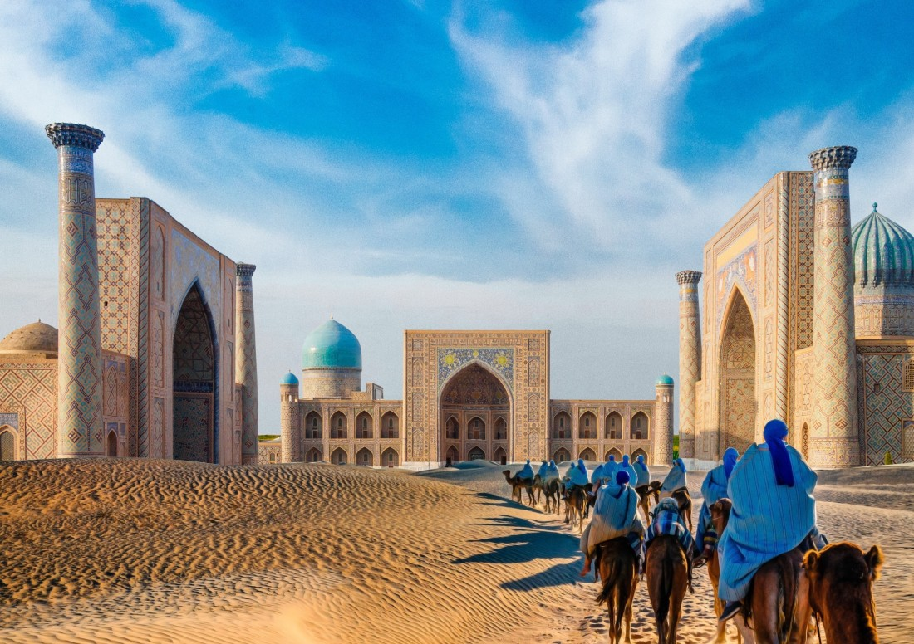

MAVZU : Yuksak ma'naviyatli yoshlarni tarbiyalashda O'rta Osiya allomalarining ilmiy meroslqrni o'rni (allomalarning ilmiy faoliyati misolida)
Reja:
- O`rta Osiyo - sharqining yuksak ma`naviyat va yirik tafakkur markazi
- O`zbekistonda XVI-XIX asrlar davri ma`naviyat va ma`rifati
- Sharq mutaffakirlarning farzandtarbiyasi haqidagi fikrlari
Orta Osiyo tarixiy voqealarga goyat boy olka bolishi bilan birga azaldan ilm-fan, madaniyat va manaviyatning markazlaridan biri bolib kelgan. Bu olka dunyoga manaviyat va marifatning barcha sohalarida yuzlab, minglab jahonshumul ulug zotlar, davlat arboblarini tarbiyalab bergan. Umumbashariyat marifatparvarligini yaratishda buyuk ajdodlarimiz bevosita ishtirok etganlar, uning taraqqiyoti va boyishiga ulkan hissa qoshganlar. Orta Osiyoning madaniy merosi jahon madaniyati va marifatining zuviy ajralmas tarkibiy qismidir.
Endilikda jahon manaviyati va marifati saltanatida oz orinlariga ega bolgan uluglarimizni teran anglash, organish va uluglash vaqti keldi. Afsuski, salkam 150 yillik mustamlakachilik, 70 yillik totatitar tuzum hukmronligi davrida respublikamiz yosh avlodi, Islom Karimov aytganidek, «...necha yillar bizni tariximizdan, dinmizdan, manaviy merosimizdan gofil etishga urindilar, - natijada ular oz xalqning tarixini, uning boy tabiiy-ilmiy, ijtimoiy-falsafiy, axloqiy madagiyatidan bahramand bolish, organishdan mahrum bolib keldi»
Ajdodlarimiz ezozlab kelgan, asrlar qaridan olib otilgan falsafiy-axloqiy pand- nasihatlar, qadriyatlar ataylab, maqsadni kozlab yurgizilgan siyosat qurboni boldi, etibordan chetda qoldi. Bu esa yosh avlodning manaviyatiga salbiy tasir otkazdi. Vaholanki, Islom Karimov «Ozbekistonning oz istiqlol va taraqqiyot yoli» kitobida takidlanidek: «...otmishdagi allomalarning bebaho merosi qanchadan-qancha avlodlarning manaviy-ruhiy ongini va turmush tarzini shakllantirgan edi va u hamon tasir korsatmoqda».
Mustaqillik tufayli organish, tahlil etish imkoniyatiga ega bolgach, ona zaminimiz manaviy merosini chuqurroq organish biz yoshlarning vazifamiz, inchunun, oz tarixini bilmagan xalqning kelajagi ham bolmaydi.
IX-XV asrlarni Yaqin va Orta Sharq mamlakatlarida shartli ravishda «Renessans» (uygonish) davri deb atashadi. Manaviyat va marifatning goyat gullab-yashnashi bu davr uchun xarakterli bolgan. Bu davrda qomusiy ilm egalari, ajoyib shoirlar, buyuk davlat arboblari etishib chiqqan. Dunyoviy fanlarning tez suratlarda taraqqiy etishi keng tarjimonlik faoliyatiga tasir etdi. Bu jarayon, ayniqsa halifa Mamun davrida ( yy.) Bagdodda «Bayt-ul-hikma» (Donolar uyi) tashkil etilgan paytda tezlashdi. Yunon falsafasi va tabobati, hind hisobi, al-ximiya va ilmu nujumga oid asarlar arab tiliga ogirildi. Bunda Markaziy Osiyodan etishib chiqqan mutafakkirlar al-Xorazmiy, al-Fargoniy, al-Farobiy, Ibn Sino, al-Beruniy kabi mutafakkirlar ham katta rol oynadilar. Renessans – uygonish davri madaniyati, manaviyati va marifati mohiyat-etibori bilan dunyoviy, gumanistik dunyoqarashi, antik davr madaniy merosiga murojaat qilish, bamisoli uning qayta uygonishni anglatadi. Uygonish davri namoyondalari qarashlari insonning cheksiz imkoniyatlariga, uning irodasiga, aql-idrokiga ishonib qarashi bilan ajralib turadi. Fanda Sharq va /arb uygonish davri tushunchalari ishlatiladi. Ular umumiy, oxshash tomonlari bilan birga, malum farq, oziga xos xususiyatlari jihatidan ham ajralib turadi. Avvalo ular davr nuqtai nazaridan farqlanadi. Ilk Sharq uygonish davri IX-XII asrlarni, songgi uygonish davri XIV-XV asrlarni oz ichiga olsa, /arb uygonish davri XV-XVII asrlarni oz ichiga olishi bilan farqlanadi. /arb uygonish davri uchun feodalizmga, dinga qarshi kurash xos bolsa, Sharqda masalaning garbdagidek keskin qoyilishini kormaymiz. Sharq va /arb uygonishi uchun umumiy xususiyatlar antik davrga murojaat qilish, uni qayta tiriltirish, tabiiy fanlar rivoji, fanda universallikni (qomusiylik), gumanizmni targib etish va boshqalarda namoyon boladi.